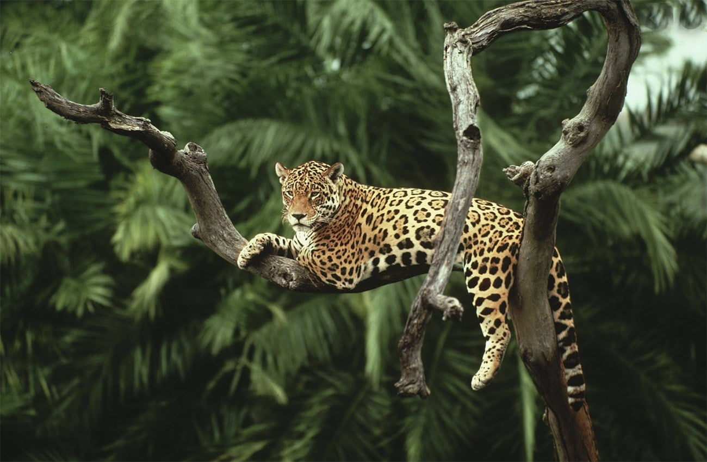
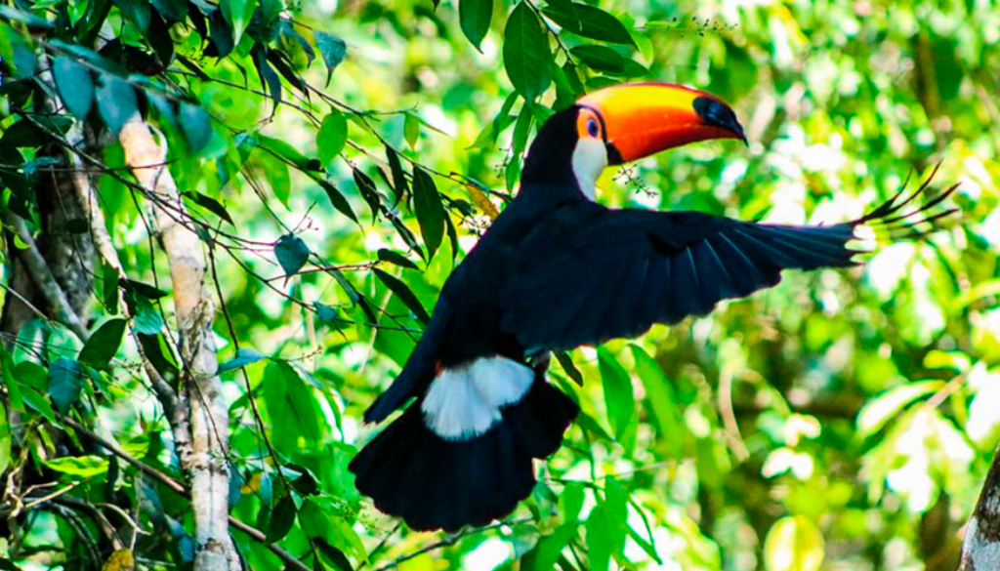

SOBRE A AMAZÔNIA
O Bioma Amazônia ocupa cerca de 49% do território brasileiro. A Amazônia possui a maior floresta tropical do mundo, equivalente a 1/3 das reservas de florestas tropicais úmidas que abrigam a maior quantidade de espécies da flora e da fauna.
CLIMA
O clima predominante na Amazônia é o equatorial úmido. Trata-se de uma região caracterizada por longos períodos de chuvas, com índices pluviométricos que variam entre 1.500 mm e 3.600 mm por ano. A umidade do ar é elevada, chegando a 80%, e as temperaturas variam entre 22ºC e 28ºC.
FAUNA & FLORA
A Fauna da Amazônia é uma das mais diversificadas, pela a enorme quantidade de animais existenes lá, tendo mais de 300 espécies de mamíferos e mais de 1,3 mil espécies de aves habiando nessa área. Mas há espeécies que podemos destacar que são as de jacaré, serpentes, sapos, variedades de aves, como o tucanos e araras, e insetos.
A Flora da Amazônia é rica nesse quesito, isso por apresenter diversos tipos de plantas e vegetações, possuindo mais de 30 mil tipos de plantas. Nelas se destacam: O guaraná, seringueira,cacau e cupuaçu.
A Amazônia é rica e rios, possuindo vários de grandes extensões, como por exemplo: Rio Amazonas, Negro, tapajós e madeira.
Na Amazônia são encontradas três principais formas de relevo: planícies, representadas pelas áreas inundadas pelos rios; planaltos, representados pelas regiões de serras; e depressões, como a região das depressões norte e sul amazônicas.
 